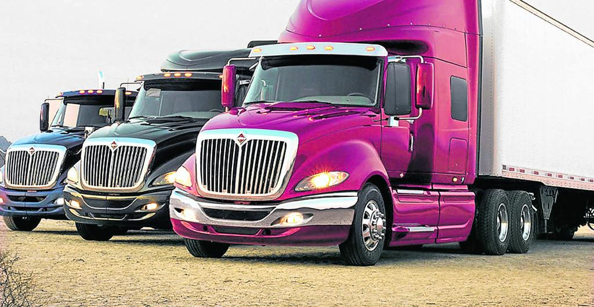

Disponibilidad en vivo • Railway + Maps
Gestiona vehículos, asigna viajes y contrata en minutos
Centraliza la oferta de conductores, ve su ubicación en tiempo real y confirma servicios con trazabilidad completa.
Conductores activos
+140
Viajes monitoreados
12.8K
Respuesta promedio
< 2 min

Explora tu panel
Contenido dinámico según el rolInicia sesión para acceder al panel correspondiente a tu rol.
Listo para operar
Hitos claveMonitoreo en mapa
Integramos Google Maps para visualizar flota, validar posición GPS y evitar ventanas emergentes.
Contratación transparente
Alertas en pantalla informan a los conductores cuando son contratados y mantienen historial.
Flujos simples
Botones de regreso al inicio en cada rol y acceso directo a tus tableros tras iniciar sesión.
Cómo funciona
3 pasos1. Publica tu disponibilidad
Los conductores registran placa, carrocería y origen. El GPS envía coordenadas al mapa.
2. Contrata sin fricción
Despachadores ven la flota en vivo y envían solicitudes que llegan como notificaciones internas.
3. Monitorea el viaje
Estados en tiempo real, alertas visuales y retorno al inicio desde cualquier rol.